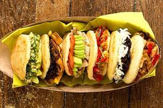
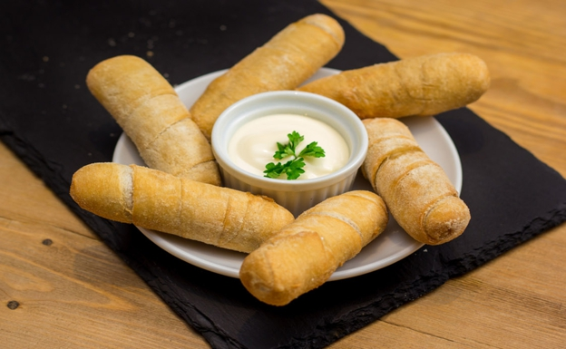
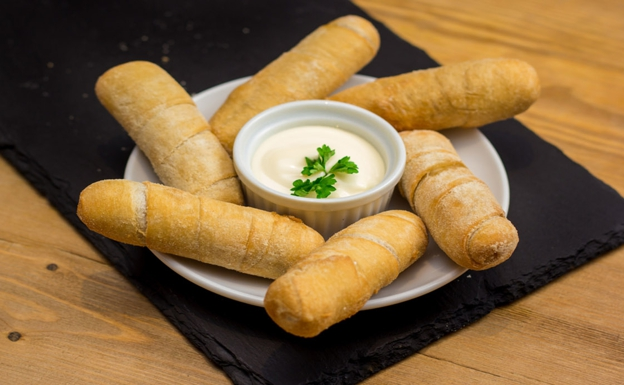

"Comidad Tipica de Venezuela"
Las comidas más conocidas de la gastronomía venezolana son las asociadas con el maíz, más que nada con las harinas de maíz, por las famosas arepas; también el pabellón criollo, con su arroz blanco, los frijoles negros, la carne mechada y el plátano. Venezuela ha logrado diferentes síntesis en sus platos variadísimos, bebidas y dulces, que recuperan varias tradiciones mezclándolas en una cocina sabrosa, de platos abundantes y nutritivos. pero en este caso vamos hablar de solos 2 tipos de platos que son:
Arepas
Tipos de arepas


 
